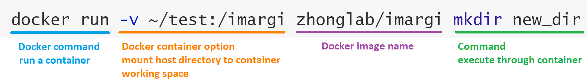

Tools and Installation¶
In the iMARGI pipeline, a bundle of tools and several bash scripts created by us are required. For convenience and reproducibility, we built iMARGI-Docker to distribute the pipeline. It delivers all the well configured tools.
System Requirements¶
Hardware Requirements¶
There isn’t specific high performance hardware requirements of running iMARGI-Docker. However, as iMARGI generates hugh amount of sequencing data, usually more than 300 million read pairs, so a high performance computer will save you a lot of time. Generally, a faster multi-core CPU, larger memory and hard drive storage will benefits you a lot. We suggest the following specs:
- CPU: At least dual core CPU. More CPU cores will speed up the processing.
- RAM: 16 GB. Depends on the size of reference genome. For human genome, at least 8GB free memory are required by BWA, so the memory on the machine needs to be more than 8 GB, which usually is 16 GB. Out of memory will cause ERROR.
- Hard drive storage: Depends on your data, typically at least 160 GB free space is required for 300M 2x100 read pairs. Besides, fast IO storage is better, such as SSD.
Software Requirements¶
iMARGI-Docker only requires Docker. You can use Docker Community Edition (CE). Docker supports all the mainstream OS, such as Linux, Windows and macOS. You can check the Technical Notes of installing Docker on different systems to learn how to do it.
We recommend using Linux system, because it’s much easier to setup and its filesystem is better for large file processing. All the example command lines here and in the documentation are ran on a Linux system. Most of time, the operations in macOS is the same as in Linux system, as it’s also a Unix system. However, if you are using Windows system, some command lines need to be modified.
If you are using Windows or macOS, you need to configure the CPU and memory settings of Docker. There is default 2 GB limit of memory to Docker on Windows or macOS (no limit on Linux). You must increase it to more than 8 GB. You can check the Technical Notes of change Docker settings to learn how to do it.
Docker Container Usage Instructions¶
An iMARGI Docker image is available in Docker-Hub, and its source files are hosted in iMARGI-Docker GitHub repo. It’s much easier to apply the iMARGI pipeline using the docker container than installing and configuring all the required tools.
First of all, you need to start your Docker daemon. Then you can pull the latest iMARGI Docker image to your sever.
docker pull zhonglab/imargi
To use the tools in the iMARGI Docker image, you need to run a Docker container. Here is an example of creating a
new directory with mkdir command through a Docker container.
docker run -v ~/test:/imargi zhonglab/imargi mkdir new_dir

You should know the -v or --volume option, which assigns the ~/test directory on your host machine to the
working directory /imargi of the iMARGI container. The container can only operate the files in ~/test directory.
If you are using Docker on Windows, the path is a little different. For example, Windows path D:\test\imargi_example
needs to be rewritten as /d/test/imargi_example, so the -v argument needs to be -v /d/test/imargi_example:/imargi.
When you executed it on Windows, a window might pop up to verify that you want to share the folder.
In the example, a folder new_dir will be created in the folder ~/test/. You can just replace the command part to
use any tool in the iMARGI Docker container. Besides, there are many other options are useful. For example, you can use
--rm to automatically clean up the container after finished its job. For more usage information of Docker, please
refer to Docker documentation.
Dependencies Instruction¶
We strongly recommend using iMARGI-Docker instead of configuring all the dependencies of iMARGI pipeline on your Linux server. However, if you really cannot run Docker on your machine, you might want to try to configure these tools. It requires root access to your machine and solid experience of Linux server administration.
We cannot guarantee success of local configuration. If you encounter some problems or have suggestions, please view or create issues in the iMARGI-Docker GitHub repo. If you are using Ubuntu (18.04), the following command lines we used to configure iMARGI-Docker might help you.
# run with root account
apt-get update
apt-get install git build-essential libz-dev libbz2-dev liblzma-dev libssl-dev libcurl4-gnutls-dev \
autoconf automake libncurses5-dev wget gawk parallel
cd /tmp && git clone https://github.com/lh3/seqtk.git && \
cd seqtk && make && make install
cd /tmp && git clone https://github.com/samtools/htslib && \
cd htslib && autoheader && autoconf && \
./configure --prefix=/usr/local && make && make install
cd /tmp && git clone https://github.com/samtools/samtools && \
cd samtools && autoheader && autoconf && \
./configure --prefix=/usr/local && make && make install
cd /tmp && git clone https://github.com/lh3/bwa.git && \
cd bwa && make && cp bwa /usr/local/bin
cd /tmp && git clone https://github.com/nh13/pbgzip && \
cd pbgzip && sh autogen.sh && ./configure && make && make install
cd /tmp && git clone https://github.com/lz4/lz4 && \
cd lz4 && make && make install
cd /tmp && wget http://ftp-trace.ncbi.nlm.nih.gov/sra/sdk/2.9.4/sratoolkit.2.9.4-ubuntu64.tar.gz && \
tar zxvf sratoolkit.2.9.4-ubuntu64.tar.gz && cp -R sratoolkit.2.9.4-ubuntu64/bin/* /usr/local/bin
apt-get install -y python3-dev libopenblas-dev python3-pip
pip3 install numpy cython scipy pandas click
pip3 install pairtools cooler HTSeq
cd /tmp && git clone https://github.com/Zhong-Lab-UCSD/iMARGI-Docker.git &&\
cp iMARGI-Docker/src/imargi_* /usr/local/bin/
chmod +x /usr/local/bin/imargi_*
The following table shows all the required tools with simple descriptions. Some of these tools, such as bash, sort
and zcat are usually default installed in most of Linux distributions. Besides, you might need root access or
compiling tools on Linux system to install some of these tools.
| Tool | Version | Installation | Brief description |
|---|---|---|---|
| Python | 3.x | Following instruction | Running environment for several tools |
| seqtk | 1.3 | Following instruction | Processing FASTA/FASTQ files |
| bwa | 0.7.17 | Following instruction | Mapping reads to reference genome |
| samtools | 1.9 | Following instruction | Manipulating SAM/BAM files |
| htslib | 1.9 | Following instruction | Manipulating SAM/BAM files |
| pairtools | 0.2.2 | Following instruction | Utilities for processing interaction pairs |
| lz4 | 1.8.3 | Following instruction | Extremely fast compression |
| pbgzip | - | Following instruction | Compression for Genomics Data |
| cooler | 0.8.3 | Following instruction | Utilities for genomic interaction data |
| HTSeq | 0.11.2 | Following instruction | Utilities for annotating interactions |
| SRA Toolkit | 2.9.4 | Following instruction | NCBI SRA tools |
| GNU parallel | - | Linux package "parallel" | Executing jobs in parallel |
| GNU awk | - | Linux package "gawk", set alias awk | Text file processing tool |
| bash | - | Linux package "bash" | Shell environment |
| sort | - | Linux package "sort" | Sort text |
| gunzip | - | Linux package "gunzip" | Compression tool |
| zcat | - | Linux package "zcat" | Readout compressed text file |
| imargi_wrapper.sh | 0.1 | Download and chmod +x |
All-in-one pipeline wrapper |
| imargi_clean.sh | 0.1 | Download and chmod +x |
Clean iMARGI paired end fastq files |
| imargi_parse.sh | 0.1 | Download and chmod +x |
Parse BAM to valid RNA-DNA interaction pairs |
| imargi_stats.sh | 0.1 | Download and chmod +x |
Simple stats report of .pairs file |
| imargi_convert.sh | 0.1 | Download and chmod +x |
Convert .pairs format to other formats |
| imargi_distfilter.sh | 0.1 | Download and chmod +x |
Filter .pairs or BEDPE file with genomic distance threshold |
| imargi_rsfrags.sh | 0.1 | Download and chmod +x |
Generate restriction fragment BED file |
| imargi_restrict.py | 0.1 | Download and chmod +x |
Restriction site analysis of .pairs file |
| imargi_annotate.sh | 0.1 | Download and chmod +x |
Annotate RNA/DNA-ends with genomic annotations |
| imargi_ant.py | 0.1 | Download and chmod +x |
Annotate RNA/DNA-ends with genomic annotations, used by imargi_annotate.sh |